PRISM Break Secure Email is a secure email solution for BlackBerry® 10 devices.
BlackBerry® devices are the most secure devices in the world and together with BlackBerry® Enterprise Service 10 (in short, BES 10) they provide the most secure messaging. But those security works only on a transport layer between BlackBerry® devices and BES 10 servers. Unfortunately the email messages are still stored on email servers (e.g., Microsoft® Exchange Server, IBM Lotus® Domino, etc.) and any administrator of those servers can easily access to your messages stored there. That means email messages are highly secure for email server owners (corporations, companies and organizations) but not for user personally. Your privacy is on stake! And if you don't use BES 10 at all, your transport layer may not be secure, too.
The PRISM Break Secure Email application protects your messages in two ways:
The asymmetric cryptography (RSA-1024) uses your 1024-bit public key to encrypt the messages sent to you. That's why you have to share your public key to your communication parties otherwise PRISM Break Secure Email will switch to symmetric encryption (AES-256). We don't advise that!!!. Because you are the only owner of your 1024-bit private key that is safely stored on your device, you are the only one that can read those messages.
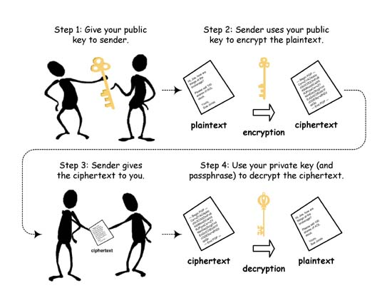
If the PRISM Break Secure Email application switches to symmetric cryptography (AES-256), a special 256-bit security key is used to encrypt messages. Although the key is unique for each user, we advise you to switch to asymmetric cryptography as soon as possible by exchanging public keys.
Before you can start using the PRISM Break Secure Email application, you need to set it up by choosing a password and creating asymmetric keys (one public key and one private key). You can also create backup of both keys or restore them from a secure backup file.
All these steps are performed with a setup wizard in four basic steps.
Before starting setup, please read the privacy policy and the end-user's license agreement.
If you agree with both, you can move to the next step by tapping on the Next action.
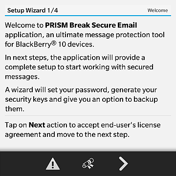
Your first action is to set a password that will be used in the PRISM Break Secure Email application. It must contain at least 6 characters and must be re-typed correctly. Keep in mind that the more characters you have, the harder it is to crack the password. You can always change the password later. The password is also used to decrease the pseudo-random generator's vulnerability and to prevent regeneration of both keys.
You can move to the next step by tapping on the Next action.
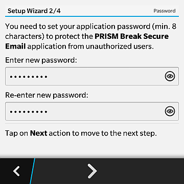
On the next screen, you need to generate your 1024-bit asymmetric keys: one public key and one private key. The public key is used for encrypting messages. You always use recipients' public keys to do that. To decrypt the messages, you need to use your own private key.
The keys are created with a pseudo-random generator which is proven to be rather vulnerable, since the process of the key creation can be determined. This threat is eliminated by combining pseudo-random generator with your password and a virtual image that you draw on the screen. The password and the drawn image together decrease the pseudo-random generator's vulnerability and prevent regeneration of both keys.
To start generating the asymmetric keys, tap somewhere on the screen and drag your finger drawing a virtual image until the progress meter shows movement. A randomly drawn virtual image generates an additional set of initial values for the key generation which is crucial for the security of your keys.
You can move to the last step by tapping on the Next action.
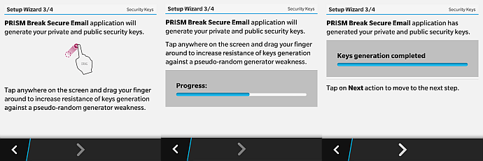
The last screen offers an option to backup or restore your asymmetric keys.
If you are seting up the PRISM Break Secure Email application for the first time, it is advisable to backup your keys to your local drive, SD memory card or remotely on cloud (DropBox or Box). You need to set another password which is used as an AES-256 key for the symmetric encryption of the backup file.
If you have already backed-up your keys, you can restore them from your password-protected file on your local drive, SD memory card or remotely on cloud (DropBox or Box) to be able to read your older messages that use the old keys. This way there is no need to reshare your public key.
The keys are stored in a file called prism.keys which are encrypted with the AES-256 symmetric encryption using its own backup password as a secure key. Keep in mind that the backup password is not the same as the password used in the PRISM Break Secure Email application (although it could be). The password is recommended to be at least 32 characters long to fill all 256 bytes of your key. Note: the longer the password, the more secure your backup file.
Tap on the Complete action to finalize the setup steps.
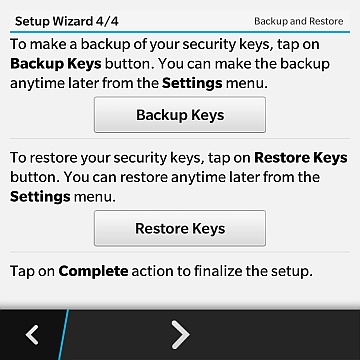
The application has three main tabs. It always starts in the composer tab where you can start composing new secure messages and send them via email.
On the left bottom part of the main screen, you can find the tab selection icon. Tap on it to open the menu for switching between the three tabs:
The main function of the Composer tab is to compose a new secure message, which can contain one attachment, and send it from the email account. Additionally, the Composer tab can be used for sending the public key via email.

The Inbox tab shows a list of all received and sent secure messages and is used for reading, editing, replying and forwarding messages.
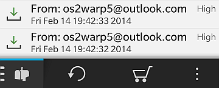
On the Key Info tab, you can find information about your asymmetric keys.
The public key URL starts with prismkey:// and is registered in BlackBerry® 10 OS to open a PRISM Break Secure Email key import card.
From the Key Info tab, you can backup your security keys, restore them, regenerate them, or reset the password.
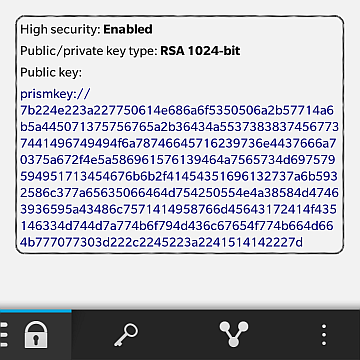
The PRISM Break Secure Email application can compose a new secure message:
In the Hub, tap on the Compose action to create a new message.
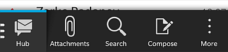
On the Composer tab in the application, tap on the Compose image button to create a new message.
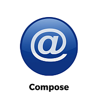
Composer is used to create a secure message that contains a message body and optionally one attached file.
There are two ways to set the recepient:
In both cases, the contact picker pops up and a contact must be selected. If the contact has more than one email addresses, you need to choose one.
WARNING: You can send the secure messages only to recepients that are stored in your contacts!
WARNING: Because only one public key is used to encrypt the message, only one recepient can be set per message!
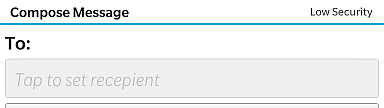
If you are using more than one email accounts, the account from which the secure email will be sent must be selected.
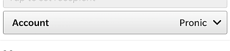
Message is written in a message box. You can use emoticons as part of your message. To clear the message box, select the Clear Text menu item.
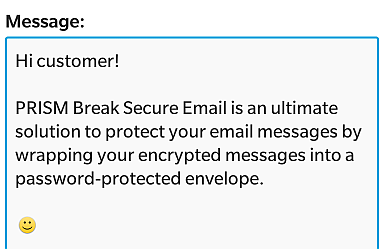
Only one file can be attached. To attach a file, select the Set Attachment menu item. File picker pops up for choosing the file. To remove the file from the message, select the Clear Attachment menu item.
When the file is attached, a paper clip appears on the screen. If you tap on the paper clip or select the View Attachment Info, information about a file path is shown.
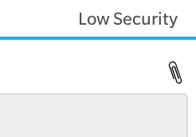
To send the message, tap on the Send action.
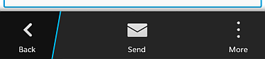
You can read secure messages from different locations:
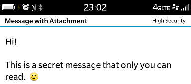
From the email message in the hub, tap on the attachment called message.prism that is going to invoke message view card after the attachment is loaded.
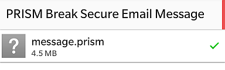
From the Inbox tab in the application, you can see the list of all secure messages. By tapping on the message you can read it.
To reply the message, tap on the Reply action. Reply doesn't reattach the attachment from the original message if there is any (WARNING: Full version only!).
To forward the message, tap on the Forward action. Forward reattaches the attachment from the original message if there is any (WARNING: Full version only!).
To compose a new message, tap on the New action.
To save the message's attachment to a file system, tap on the Save Attachment action. You can store the file on internal storage, external SD card or cloud storage (DropBox, Box or OneDrive).
WARNING: Check the title of the message if it contains the attachment. If title shows Message with Attachment then attachment is available in the message. If title shows Message then attachment is not included.
Each message contains a sender's public key. By tapping on the Import Key action you can import the key into the contacts.
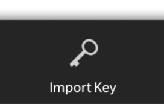
The following actions can be done on the security keys:
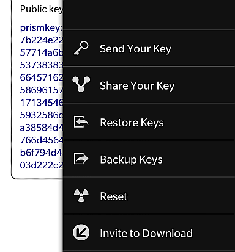
There are two ways to send your public key:
Tap on the Restore Keys action to restore your security keys from a file called prism.keys from your local drive, SD memory card or remotely on cloud (DropBox or Box). You need to set another password that is used as AES-256 key for symmetric encryption of the backup file.
The same action can be invoked from Settings menu.
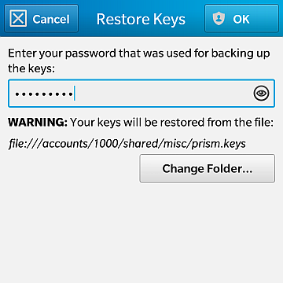
Tap on the Backup Keys action to backup your security keys to a file called prism.keys on your local drive, SD memory card or remotely on cloud (DropBox or Box). You need to set another password that is used as AES-256 key for symmetric encryption of the backup file. Keep in mind that backup password is not the same as password used in the PRISM Break Secure Email application, but it could be the same. Password should be at least 32 characters long, to fill all 256 bytes of your key. Note: Longer is the password, more secure is your backup file.
The same action can be invoked from Settings menu.
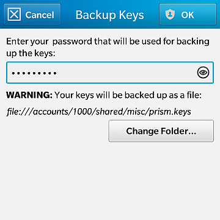
Tap on the Reset action to invoke setup wizard to reset the password and the security keys.
Settings menu offers the following options:
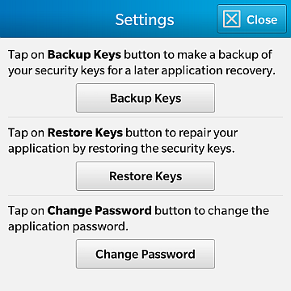
PRISM Break Secure Email application is one of the applications that are listed in a share list. The application can be also used when sharing:
Free version of the application is fully functional when reading the mesage but has two limitations when composing it:
To unlock the application, tap on the Purchase action on the main application screen and complete the purchase process.
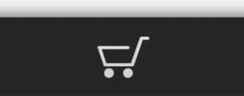
If you have any additional questions don't hesitate to contact us at prismbreak@pronic.si.